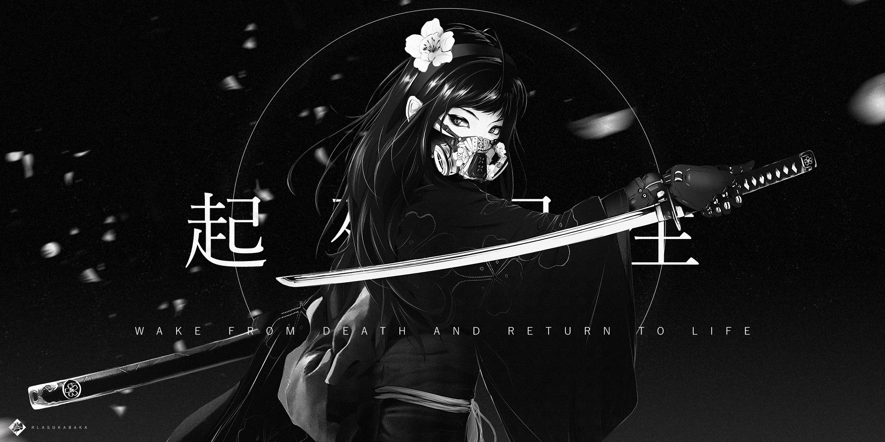

ABOUT
GALLERY
CONTACT

crop_free
"WAKE FROM DEATH AND RETURN TO LIFE" pt.2
Inspired by Japanese proverb 起死回生 to let go of the past and move forward. Inspiration drawn from classic aesthetics Akira Kurosawa and iconic mangas such as Ghost In The Shell. (Raymond Lam, Photoshop 2020)
crop_free
Artwork Presentation
crop_free
Tall Landscape Presentation
crop_free
Portrait Presentation
crop_free
Ending Title Card